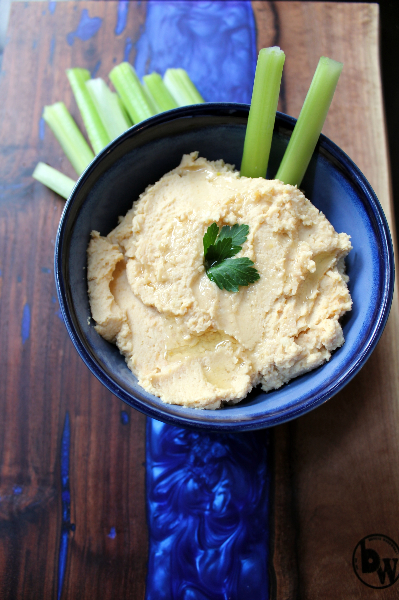

Hummus

Description
Homemade garlic hummus.
Ingredients
- 1 (15 ounce) can garbanzo beans, drained
- 4 cloves garlic, sliced
- 1 large lemon, juiced
- 1 tablespoon tahini
- 1 tablespoon water
- 1 tablespoon olive oil
- ½ teaspoon sea salt
Steps
- Combine garbanzo beans, garlic, lemon juice, tahini, water, olive oil, and salt in the bowl of a food processor; process until smooth.